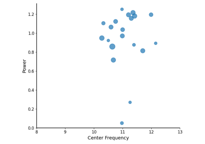

specparam.modes.mode.Mode¶
- class specparam.modes.mode.Mode(name, component, description, func, jacobian, params, ndim, freq_space, powers_space)[source]¶
Defines a fit mode.
- Parameters:
- namestr
Name of the mode.
- component{‘aperiodic’, ‘periodic’},
Which component the mode relates to.
- descriptionstr
Description of the mode.
- funccallable
Function that defines the fit function for the mode.
- jacobiancallable, optional
Function for computing Jacobian matrix corresponding to func.
- paramsdict or ParamDefinition
Parameter definition.
- ndim{1, 2}
Dimensionality of the parameters. This reflects whether they require a 1d or 2d array to store.
- freq_space{‘linear’, ‘log10’}
Required spacing of the frequency values for this mode.
- powers_space{‘linear’, ‘log10’}
Required spacing of the power values for this mode.
- __init__(name, component, description, func, jacobian, params, ndim, freq_space, powers_space)[source]¶
Initialize a mode.
Methods
__init__(name, component, description, func, ...)Initialize a mode.
Check the description of the parameters for the current mode.
Attributes
Define property attribute to access the number of parameters.
- property n_params¶
Define property attribute to access the number of parameters.
Examples using specparam.modes.mode.Mode¶

Plot Model Components